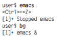

Лабораторная #11 по ОС
Лабораторная работа №11 - «Работа с процессами в Unix.
Цель работы: Получить представление о процесса в Unix-системахВведение
Понятие процесса
В самом первом приближении можно считать, что процесс — это программа, выполняющаяся в оперативной памяти компьютера. Но такая формулировка как бы подразумевает, что речь идет только о наборе машинных инструкций, последовательно выполняемых процессором. Фактически же в многозадачных системах понятие процесса является значительно более сложным.
Для хранения всех данных, которые необходимо запоминать в целях организации работы процессов, в памяти, выделенной для ядра, создается для каждого процесса особая структура данных типа task_struct (структура задачи). В ней можно выделить следующие функциональные группы данных:
- идентификационная информация о процессе;
- статус процесса;
- информация для планировщика;
- информация для организации межпроцессорного взаимодействия;
- ссылки и связи процесса;
- информация о времени исполнения и таймеры;
- информация об используемых процессом ресурсах файловой системы;
- информация о выделенном процессу адресном пространстве;
- контекст процесса – информация о состоянии регистров процессора, стеке и т.д.
Приблизительно можно выделить следующие группы процессов:
- Системные процессы являются частью ядра и всегда находятся в оперативной памяти. Такие процессы не имеют соответствующих им программ в виде исполняемых файлов и запускаются особым образом при инициализации ядра системы. Примерами системных процессов являются планировщик процессов, диспетчер свопинга, диспетчер буферного кэша, диспетчер памяти ядра. Такие процессы являются фактически потоками ядра.
- Демоны отличаются от обычных процессов только тем, что они работают в неинтерактивном режиме. Если с обычным процессом всегда ассоциирован какой-то терминал или псевдотерминал, через который осуществляется взаимодействие процесса с пользователем, то демон такого терминала не имеет. Демоны обычно используются для выполнения сервисных функций, обслуживания запросов от других процессов, причем не обязательно выполняющихся на данном компьютере. Пользователь не может непосредственно управлять демонами, он может влиять на их работу, только посылая им какие-то задания, например, отправляя документ на печать.
- Прикладные процессы – это все остальные процессы, выполняющиеся в системе. Как правило, эти процессы порождаются в рамках сеанса работы пользователя. В каждом таком сеансе работы вначале запускается оболочка (командный интерпретатор) shell. Этот экземпляр оболочки называется login shell и завершение соответствующего процесса приводит к отключению пользователя от системы.
Однако практически в любом контексте можно заменить слово «процесс» терминами «программа», «команда» или «задача». Внутри системы Linux нет принципиальных отличий между программой и командой. В обиходе текстовые программы, например ls, часто называются «командами». Чтобы с точностью сказать, с чем мы имеем дело: с программой или командой, необходимо знать о том, какой файл при этом выполняется. Программный файл отличается от остальных файлов только тем, что имеет бит доступа "x"
Например, как на рисунке ниже, в обоих следующих файлах server.tex является информационным файлом, а sichere — программой. Точнее говоря, здесь мы имеем дело с обычным сценарием командного процессора, выполняющим резервное копирование. Оба этих файла являются текстовыми, но исполнять можно только один из них — sichere, так как в нем установлены биты доступа x.
Только при запуске «безжизненного» программного файла он становится «живым» процессом (синоним — «задача»), а управляет этим процессом ядро Linux. В таком контексте можно было бы переформулировать название этой главы: «За- пуск программ и команд, управление процессами и завершение их».
Постоянно возникает вопрос: а где в Linux находятся EXE-файлы? Еще несколько лет назад ответ звучал: «Таких файлов нет». Исполняемые программы в Linux характеризуются наличием бита доступа x. Такой файл называется исполняемым (executable). Таким образом, применяемое в Windows расширение файлов EXE оказывается ненужным.
Запуск программы осуществляется через меню или при щелчке кнопкой мыши на пиктограмме. В KDE и Gnome присутствует сочетание клавиш (Alt+F2), обеспечивающее быстрый запуск программ.
Процесс в первом приближении можно определить как экземпляр выполняющейся программы с необходимым для ее выполнения набором ресурсов. В рамках ОС процесс представлен некоторым набором структур данных. Базовая структура данных – таблица процессов, в которой каждый процесс представлен одной записью. Поля этой структуры описывают различные характеристики процесса (перечислены некоторые из них):
- PID – уникальный числовой идентификатор процесса;
- PPID – идентификатор родительского процесса;
- STATUS – состояние процесса;
- TIME – время выполнения процесса (суммарно в режиме ядра и режиме задачи);
- START – время запуска процесса;
- TTY – терминал процесса;
- PRI – текущий приоритет процесса;
- CPU – процент использования процессорного времени;
- NI – значение nice;
Запуск программ
Кроме того, можно запускать программы в командном окне (например, xterm, konsole и т.д.) или в текстовой консоли. Для этого нужно просто указать название программы и нажать клавишу Enter. Профессионалы Linux работают именно таким образом, поскольку ввести пару букв гораздо быстрее, чем отыскать программу в очень разветвленном меню. Как правило, достаточно просто указать название программы. Затем shell-интерпретатор ищет программу во всех каталогах, перечисленных в переменной окружения PATH. В следующих строках показано, как обычно настраивается эта переменная:
(Имеете в виду, что сама команда идёт после знака $ и помните это всегда, когда в литературе встретите это ещё раз )
Приоритетные и фоновые программы
Если запускать программы в X(имеется в виду Вот эта штука ) через меню, то они будут работать в виде так называемых фоновых процессов, не мешая друг другу. Эти процессы также могут запускать другие программы еще до завершения инициирующей программы. Совсем иначе обстоит дело при выполнении программы в текстовой консоли или командном окне. Программа запускается как приоритетный процесс. Прежде чем запустить следующую программу, вам придется дождаться завершения работы текущего процесса. Однако в командном окне или текстовой консоли все же можно запускать про- граммы в фоновом режиме. Для этого после названия программы нужно просто поставить символ &:
Если вы забудете поставить &, можно постепенно перевести выполнение про- граммы в фоновый режим. Прервите выполнение программы, нажав сочетание клавиш Ctrl+Z, а затем возобновите программу с помощью команды bg:
Если вместо bg использовать команду fg, то программа будет выполняться как приоритетный процесс. При выполнении некоторых программ в фоновом режиме вам будут мешать многочисленные текстовые сообщения, выдаваемые при этом. Однако избавиться от них совсем несложно, нужно просто переадресовать их в каталог /dev/null. На- пример, следующая команда позволяет отформатировать USB-флешку в фоновом режиме:
Если вместо bg использовать команду fg, то программа будет выполняться как приоритетный процесс. При выполнении некоторых программ в фоновом режиме вам будут мешать многочисленные текстовые сообщения, выдаваемые при этом. Однако избавиться от них совсем несложно, нужно просто переадресовать их в каталог /dev/null. На- пример, следующая команда позволяет отформатировать USB-флешку в фоновом режиме:
root$ mkfs.ext3 /dev/sdc > /dev/null &
Далее пойдёт описание команд, все что далее требуется проделать + задание в конце.
Выполнение.
Команда ps.
Список всех текущих процессов создается с помощью команды ps. Без дополнительных параметров она отображает только ваши собственные процессы — и только те, которые были запущены из текстовых консолей или командных окон. Команда ps может получать разнообразные параметры.
Или так, вывод был сокращён. Узнать что за параметры у данной команды можно вызвав справку о команде man ps
Команда top.
Обычно top практичнее ps: эта команда упорядочивает процессы обратно пропорционально тому, насколько они загружают процессор, и сначала отображает процессы, протекающие в настоящий момент. Кроме того, программа сообщает, какой объем памяти при этом необходим и т. д. Список процессов обновляется раз в две секунды, пока программа не завершается нажатием клавиши Q. Следующие строки характеризуют работу системы в холостом режиме:
В столбце PID указаны номера процессов. Зная номер процесса, можно принудительно остановить вышедшие из-под контроля программы или фоновые процессы с помощью команды kill.
Процессы могут находиться в различных состояниях. Чаще всего встречаются состояния R (running)1 и S (sleeping)2, то есть сейчас процесс не выполняет никаких задач и ожидает ввода информации). Кроме того, выполнение программы можно временно прервать, переведя ее в состояние T (stopped3).
Команда top обладает способностью интерактивного приема команд. При этом процессы можно останавливать (K — kill4 ) или изменять их приоритет (R).
Htop. Значительно удобнее команды top ее альтернатива — команда htop, которую в большинстве дистрибутивов требуется устанавливать отдельно. В частности, она позволяет прокручивать список процессов по горизонтали и по вертикали.
Попробуйте её установить и посмотрите, что получиться. Как её запустить после установки вы уже знаете.
Iotop. Если вы хотите отследить не нагрузку, оказываемую на процессор и память, доступ к жестким дискам и другим носителям данных, то запускайте вместо top команду iotop. Параметр -o позволяет ограничить вывод лишь теми процессами, которые заняты именно операциями ввода-вывода. С помощью параметра -u можно вывести на экран лишь ваши собственные процессы. Команда iotop входит в состав одноименного пакета, который, как правило, приходится устанавливать дополнительно. Точно такая же история, что и выше.
Графические аналоги.
Все что было выше предназначенны для вывода информации в консоль, а теперь вы поработайте с графичскими аналогами.
Для начала установите:
И найдите её через меню.
Либо просто из консоли запускаете:

После запуска она выглядит вот таким образом

Иерархия процессов.
Внутри системы вместе с каждым процессом сохраняется PID-номер его родительского процесса. Эта информация позволяет построить дерево процессов, на вер- шине которого всегда располагается процесс init. Это первая программа, запуска- емая сразу же после загрузки ядра. Увидеть иерархию процессов можно с помощью команды pstree. Параметр -h позволяет выделить те процессы, которые являются родительскими для процесса, выполняемого в настоящий момент.Вывод немного обрезан:
Принудительное завершение процессов
Как правило, с окончанием программы завершается и процесс. Но, к сожалению, и в Linux программы могут содержать ошибки, не позволяющие им остановиться, из-за чего такие процессы все сильнее потребляют ресурсы оперативной памяти и процессора. В таких случаях процесс необходимо принудительно завершать. При работе с текстовыми командами для принудительного завершения достаточно нажать Ctrl+C. Программа сразу завершается.
Команда kill. Эта команда посылает действующему процессу сигналы, специфицируемые благодаря номеру PID (его можно узнать с помощью команды top или ps). Чтобы «аккуратно» завершить программу, используется сигнал 15 (kill задействует этот сигнал по умолчанию). Если это не помогает, необходимо применить сигнал 9 (в данном случае — для процесса 2725):
Это дано в виде примера, ваша задача найти реально существующий процесс и убить его, все необходимые команды у вас есть. Синтаксис узнатете из справки по (команда man).
Команда top. Можно завершать процессы и с помощью команды top: просто нажмите клавишу K и дополнительно — номер процесса, а также желаемый сигнал.
Команда killall. Эта команда гораздо удобнее, так как при ее использовании можно указывать не номер процесса, а название программы. Правда, в данном случае будут завершены все процессы с таким именем.
Вот тут можете запустить «наглую рыжую морду(с)» и затем её убить, либо любой другой процесс на ваше усмотрение.
Иногда xkill закрывает окно, а процесс или его части про- должают работать. Убедитесь в том, что команда действительно прекратила рабо- ту, выполнив команду top или ps. При необходимости воспользуйтесь командой kill -9 n.
Немного информации.
Блокировка мыши и клавиатуры. И уж совсем неприятно, когда X-программа не просто остается висеть, но и переводит на себя фокус мыши или клавиатуры либо каким-то образом блокирует X. При этом компьютер почти не реагирует на ввод. В таких случаях иногда помогает волшебное сочетание Ctrl+Alt+F1, позволяющее перейти в первую текстовую консоль. Оттуда можно войти в систему, найти зависшую программу и завершить ее с помощью команды top. Когда клавиатура полностью заблокирована, всегда остается возможность зайти в систему из сети через SSH и выполнить kill таким образом. Разумеется, этот вариант возможен лишь тогда, когда вы работаете в локальной сети, а на локальном компьютере запущена программа sshd. Если сама X окажется заблокированной после остановки программы, попытайтесь принудительно завершить работу или, наконец, выполнить команду shutdown. Все эти варианты лучше, чем нажатие Reset, так как в последнем случае можно потерять данные!
Ограничение размера процесса. При работе с программами, запускаемыми из оболочки (например, со всеми командами, которые выполняются в командном окне), можно воспользоваться оболочковой командой ulimit, которая позволяет ограничить максимальный размер потребляемой памяти, создаваемых файлов и т. д. Обычно ulimit настраивается с помощью файла /etc/profile.
Распределение машинного времени
При повседневной работе с Linux вычислительной мощности машины обычно более чем достаточно, чтобы выполнять все текущие процессы без задержек. Однако, если Linux занята выполнением работы, требующей большого объема 196 Глава 8. Управление процессами вычислений, например компилирует крупную программу, то система пытается справедливо распределить имеющееся в распоряжении вычислительное время между всеми процессами.
Иногда бывает целесообразно выделить определенному процессу заметно больше или несколько меньше времени, нежели остальным. Для этого предназначена команда nice, с помощью которой можно запускать программы с повышением или понижением приоритета. В таком случае команде nice сообщается приоритет, значение которого находится в диапазоне между 19 (совсем низко) и –20 (очень высоко). По умолчанию процессы запускаются с приоритетом 0. В следующем примере программа резервного копирования запускается с низким приоритетом, чтобы она не влияла на выполнение других процессов (ведь ничего страшного не случится, если резервное копирование продлится на три секунды дольше.
Renice. С помощью команды renice можно изменять приоритет процессов, выполняемых в настоящий момент. В качестве параметра необходимо указать ID процесса (который вы ранее узнали с помощью команды top или ps). Подробная информация о renice содержится на соответствующей странице справки man. Команда top также может интерактивно менять приоритет процесса. В любом случае только администратор может выполнять программы с более высоким приоритетом, чем 0, либо повышать приоритет процесса, который уже выполняется.
Выполнение процессов от имени другого пользователя (su)
При выполнении программы обычным пользователем действуют два ограничения. Рядовые пользователи могут выполнять только такие процессы, в которых это допускается в соответствии с правами доступа (пользователь, группа, биты доступа r и x). При работе с обычными программами это ограничение никак не проявляется. Но, например, в каталоге /usr/sbin есть отдельные команды, предназначенные для системного администрирования, которые могут запускаться только администратором.
Процессы принадлежат тому пользователю, который их запустил. Это означает, что процесс имеет доступ к тем же файлам, что и пользователь, запустивший его (то есть ваши программы не имеют доступа к тем файлам, которые вы как пользователь не имеете права изменять). Новые файлы, созданные процессом, также принадлежат пользователю, запустившему программу.
По этим причинам обычный пользователь не может выполнять многие административные задачи. Очевидно, что самое простое решение — войти в систему с правами администратора. Однако, не стоит постоянно работать в качестве администратора: слишком велика опасность случайного причинения вреда. Поэтому в некоторых дистрибутивах в принципе отключена возможность входа с правами администратора. Так, например, в Ubuntu, непосредственный вход в систему с правами администратора невозможен.
Команда su. Часто требуется получить привилегии администратора в первую очередь для того, чтобы быстро выполнить команду, — покидать ради этого X было бы очень неудобно. Самая простая возможность изменить пользователя, не покидая окна X-Shell, — воспользоваться командой su name. Если вы выполняете эту коман- ду без прав администратора, то система запросит у вас пароль соответствующего пользователя. После ввода пароля вы сможете выполнять команды в командном окне (xterm, konsole) под измененным именем, пока не вернетесь в обычный режим с помощью команды exit или сочетания клавиш Ctrl+D.
В следующих строках показано, как обычный пользователь ненадолго входит в систему с правами администратора, пользуясь этими правами, осуществляет привязку сегмента жесткого диска дереву каталогов, а затем выходит из системы (как администратор) и продолжает работать в обычном режиме:
Выполнение процессов от имени другого пользователя (sudo).
Программа sudo применяет при работе принципиально иной подход по сравнению с описанными выше вариантами su. После проведения конфигурации она предоставляет определенным пользователям права администратора для выполнения определенных программ. Из соображений безопасности нужно указывать при этом свой пароль (а не пароль администратора!).
В таком случае sudo выполняет соответствующие программы так, как если бы они были запущены другим пользователем (по умолчанию администратором). Таким образом, отдельные пользователи могут брать на себя выполнение административных задач либо выполнять команды, критически важные для работы системы, не зная при этом пароля администратора.
Программа sudo протоколирует все выполненные команды (в том числе неудачные попытки) и обычно заносит эту информацию в файл /var/log/messages. Программа sudo запоминает пароль на 15 минут. Если в течение этого времени вы выполните с помощью sudo другую команду, вам не будет направляться запрос о пароле (заданное время можно изменить в файле /etc/sudoers с помощью ключевого слова timestamp_timeout).
Конфигурация. Конфигурация sudo осуществляется с помощью файла /etc/ sudoers. Проще говоря, в этом файле в трех столбцах описывается, какие пользователи с каких компьютеров имеют право выполнять отдельные программы. Следующая запись означает, что пользователь kathrin, работающий на компьютере uranus, имеет право выполнять команду /sbin/fdisk (ключевое слово ALL означает, что kathrin имеет право выполнять команду под любой учетной записью, то есть как root, news, lp и т. д.).
Поянснение к скриншоту выше: Пользователь kathrin теперь может выполнить команду fdisk следующим образом. Вводим пароль пользователя kathrin. При работе с fdisk нужно указать путь целиком, если программа не находится в одном из каталогов PATH пользователя kathrin. Команда fdisk будет автоматически выполнена с привилегиями администратора. Чтобы выбрать другую учетную запись для выполнения, нужно указать ее так: sudo -u учетная запись.
Можно позволить определенному пользователю выполнять sudo без указания пароля. Для этого внесите в sudoers строку, построенную по следующему образцу: За место «kofler» вставьте своё имя пользователя.
kofler ALL=(ALL) NOPASSWD: ALLКонечно, такой метод небезопасен, но если вам приходится часто выполнять административные задачи, то вы по достоинству оцените этот удобный способ. Обратите внимание, что метка NOPASSWD действительна лишь в том случае, когда отсутствуют другие строки sudoers, требующие, чтобы пользователь указал пароль. Это же правило действительно для групповых записей, то есть, например, %admin ....
При решении объемных административных задач со временем станет обременительно ставить перед каждой командой слово sudo. Гораздо более элегантное решение — перейти с помощью sudo -s в режим администратора. Все последующие команды будут выполняться с правами администратора. Чтобы выйти из этого режима, нажмите сочетание клавиш Ctrl+D.
Системные процессы (демоны)
Демоны (daemons) — это фоновые процессы, предназначенные для управления системой. Обычно эти процессы запускаются при включении компьютера в рамках процесса Init-V. Если вы хорошо знакомы с терминологией Windows, демоны в Linux соответствуют службам Windows. Однако не забывайте, что названия демонов могут отличаться от дистрибутива к дистрибутиву (например, httpd или apache2 — демон веб-сервера Apache).
Запуск и завершение работы демонов Теперь о самом главном! В большинстве дистрибутивов вышеперечисленные демоны запускаются системой Init-V. Базовая и подробная информация по этой системе приводится в главе 16. Там же будет рассказано, как вы можете интегрировать в систему новые сценарии. Здесь я очень сжато объясню, как можно запустить или остановить демон вручную, что сделать, чтобы демон автоматически запускался при старте системы, либо как избежать автоматического запуска демона. Эта информация особенно пригодится вам при создании и конфигурировании сетевых служб. Обратите внимание, что в разных дистрибутивах различаются не только команды, но и названия служб. Например, в Debian, Ubuntu и SUSE сценарий для запуска веб-сервера Apache называется apache2, а в Fedora и Red Hat — httpd.
Остановка вручную Теперь рассмотрим команды, предназначенные для остановки служб:
Перезагрузка/перезапуск Многие сетевые службы позволяют заново считывать конфигурационную информацию, не останавливая работу системы. Команда reload нужна для того, чтобы служба учитывала изменения, внесенные в конфигурационный файл. Службы, которые не поддерживают reload, следует полностью перезапускать с помощью команды restart.
Например вот этими командами мы можем как перезапустить cron(демон планировщик в UNIX) так остановить его, так и снова запустить.
Чтобы ознакомиться с полным списком демонов надо ввести service и нажать несколько раз «tab»

Запуск вручную Чтобы запустить демон, сетевую службу или сервер, выполните одну из следующих команд. service работает в большинстве распространенных дистрибутивов за исключением Debian. Доступность остальных команд зависит от конкретного дистрибутива, соответственно, от системы Init-V.
Контрольные вопросы
- Как кодируются в атрибутах файла и каталога права доступа? Какие форматы записи прав бывают?
- Кто может изменять права доступа к файлам?
- Какие команды для изменения символьных кодов прав доступа Вы знаете? Перечислите и расскажите о назначении каждой из команд.
- Что означает право на выполнение, применительно к каталогу?
- Какими правами надо обладать, чтобы удалить файл или каталог?
Задание
- Выведите на экран листинг характеристик (в длинном и коротком форматах) процессов, инициализированных с Вашего терминала.
- Выведите на экран листинг процессов, запущенных конкретным пользователем.
- Разработайте и запустите простейшую процедуру в фоновом режиме с бесконечным циклом выполнения, предусматривающую, например, перенаправление вывода каких- то сообщений в файл или в фиктивный файл, и использующую команду sleep для сокращения частоты циклов процедуры.
- Выполните п. 1. Объясните изменения в листинге характеристик процессов.
- Проанализируйте листинг процессов. Какой процесс является родительским для процедуры.
- Выйдите из системы и войдите заново. Проанализируйте листинг процессов. Объясните изменения в системе.
Контрольные вопросы
- Что такое «демон»?
- Что такое прикладные процессы?
- Рассказать про демон init?
- Какие команды для работы с процессами были использованны в работе?